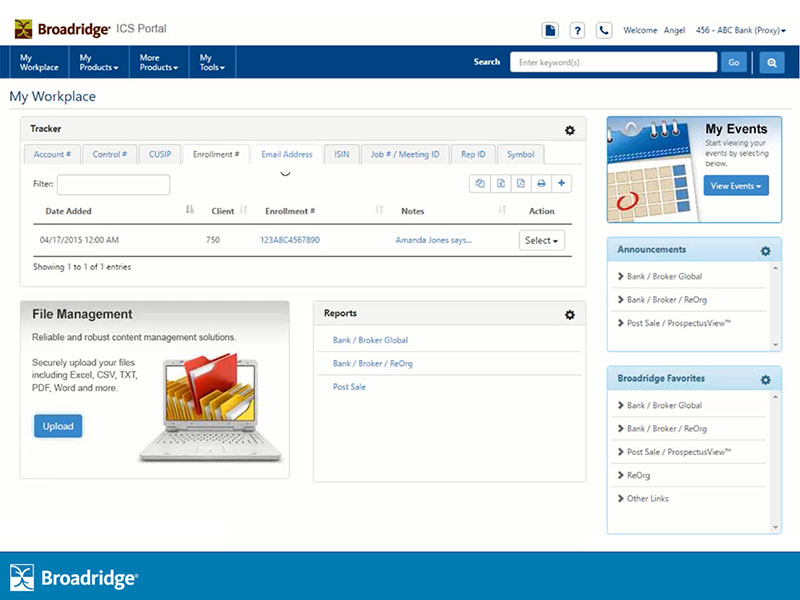

Customers licensing multiple Broadridge ICS applications had to sign in to each one separately, and could only ever view one application's data at a time. This is how that fragmented experience became a single, multi-tenant SSO portal — a first-of-its-kind effort at Broadridge that took over a year to build.
A global fintech company providing essential technology-driven solutions, data analytics, and operations services to financial institutions, public companies, and investors — a key infrastructure provider for the industry.
In daily trading volume processed through Broadridge's infrastructure.
Of North American corporate issuer proxy communications handled by Broadridge.
Broadridge Investor Communication Solutions, Inc. (ICS) is a leading provider of investor communication services — proxy voting, annual report distribution, and regulatory reporting for equity and mutual fund investors. Customers licensing several ICS SaaS applications had to sign in to each one individually; there was no single sign-on. My team helped identify this gap, and I was asked to start ideating and designing concepts for a new ICS SSO portal that would let customers access every licensed application and service from one place.
Today, the ICS Portal (MyService.Broadridge.com) gives issuer clients online access to proxy voting, material mailing status, and investor communication tools. Clients use it to manage beneficial securityholder mailings, track jobs, verify mailings, check job status, and manage compliance — all from a single, unified experience.
Several "Bank and Broker" applications had been designed and developed in silos, resulting in disparate designs, workflows and environments. A client licensing multiple applications had to sign in to each one individually, and was restricted to viewing data from only one application at a time. Users needed true SSO — the ability to view and leverage information, data and assets across every application they were licensed for.
"This outlines how design considerations and lifecycle were applied to one of the largest projects I worked on — a project that included several Bank and Broker applications, was a first-of-its-kind at Broadridge, and took over a year to complete."
Several concurrent efforts fell into "sprint 0": deciding on portal software (third-party vs. an in-house build), selecting which applications to include, reviewing client feedback that supported the need for a portal, auditing each standalone application's design challenges, and resource and cost planning.
From sprint 0 onward — portal design inspiration, UX research, and evaluating third-party portal software to understand what UI/UX features and functionality it offered.
To avoid redesigning or redeveloping entire standalone applications, engineers built APIs into parts of each app to pull in data and functionality — letting the portal present a consistent, modern UI/UX for all applications, reusing existing patterns where they worked and creating new ones where they didn't.
Understand user needs, motivations, behaviors, and pain points.
Ran UX research including ICS user interviews, surveys, A/B tests and usability tests.
Researched third-party SSO portal solutions alongside an in-house custom build.
Completed a competitive analysis, market research and stakeholder interviews.
Distill research findings into actionable insights.
Reviewed and created user personas across the licensed application base.
Built empathy maps and user journey maps across the fragmented sign-in experience.
Defined clear problem statements to align stakeholders before ideation.
Develop potential solutions for the defined problems.
Sketched concepts for a unified portal shell across all licensed applications.
Mapped user flows across sign-on, navigation and cross-application data views.
Developed the information architecture for a true multi-tenant portal.
Convert ideas into interactive prototypes for testing and concept validation.
Created low-fidelity wireframes to facilitate high-fidelity clickable prototypes.
Converted approved concepts into high-fidelity, testable prototype flows.
Validate designs with real users to identify usability issues.
Tested the clickable prototype directly with real ICS clients for concept validation.
Used the resulting test data to identify gaps and issues early, and adjusted accordingly.
Hand off design assets to the developers building the portal for release.
Prepared design specs, assets and documentation for the development team.
Guided engineers through the API-integration approach for each standalone app.
Monitor performance after the portal goes live.
Analyzed post-launch user feedback and metrics to inform design-enhancement recommendations.
Continued client feedback loops fed the next round of portal improvements.
A single, cross-application dashboard replacing what used to be separate sign-ins for every licensed ICS application.
